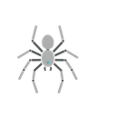

TL;DR
Crawler
接上 DeepSeek 或 Claude 后，摘要会交给模型重写；不填也能用，本地摘要照常工作。
总结引擎
DeepSeek
国内直连 · 便宜快
Claude
Anthropic 官方
DeepSeek API Key
只保存在本机
chrome.storage.local
，请求由后台脚本发起，不会出现在网页里。
获取 Key →
模型
默认
deepseek-flash
（快、便宜，摘要够用）；想更强可填
deepseek-v4-pro
。留空即用默认。
Anthropic API Key
只保存在本机
chrome.storage.local
，请求由后台脚本发起，不会出现在网页里。
获取 Key →
模型
留空则使用默认值
claude-sonnet-4-5
。
保存设置
测试连接
清除此 Key
怎么用：
1. 选引擎、填 Key，点「测试连接」确认能通，再保存
2. 打开任意普通网页（新闻、博客、文档都行）
3. 点工具栏上的蜘蛛图标 → 它出现并跟着鼠标爬，读到关键句就高亮并在右上角记一条
4. 面板底部两个按钮：
复制 TL;DR
/
用模型写 TL;DR
5. 再点一次图标 → 蜘蛛消失，网页恢复原状